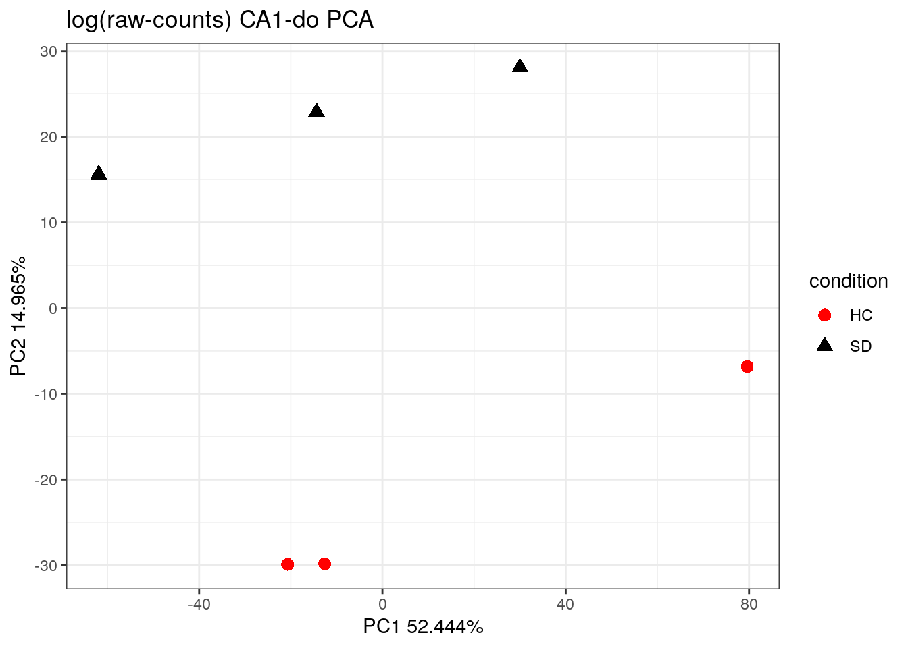
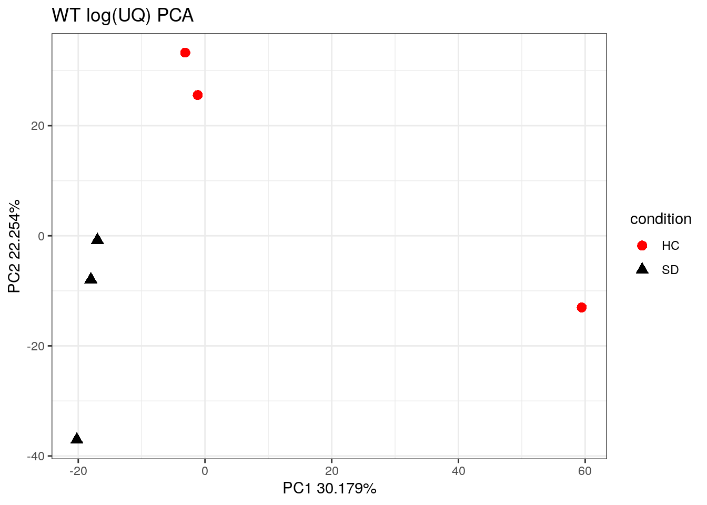
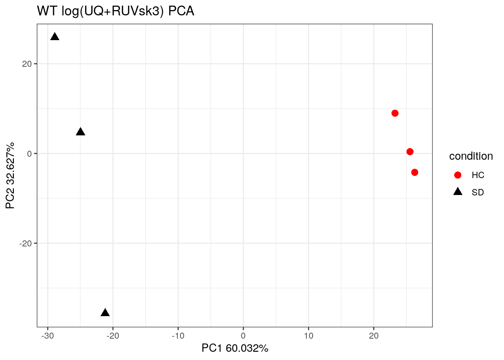
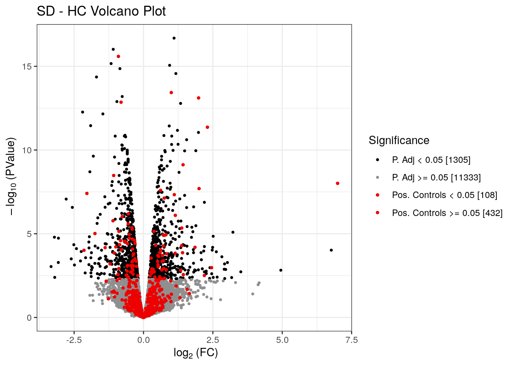
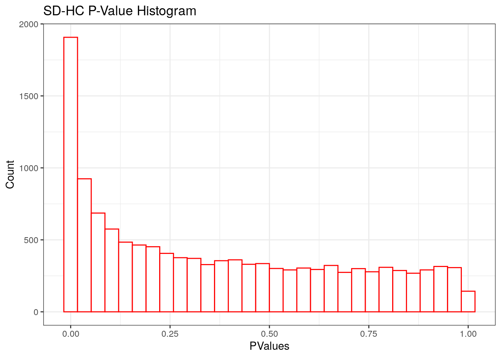

Code
library(scater)
library(edgeR)
library(RUVSeq)
library(darioscripts)
library(DT)
library(ggpubr)
source("R/luciavolcano.R")
library(muscat)
library(biomaRt)Dario Righelli
July 17, 2025
In this code chunk, we construct pseudo-bulk RNA-seq data from single-cell multiome datasets using the TENxMultiomeTools package. Specifically, we:
SingleCellExperiment objects (scelist) representing multiple samples.aggregateAcrossCells) to simulate bulk RNA-seq profiles for each annotated group.SingleCellExperiment object (scepseudo) by merging the pseudo-bulk profiles from all samples.This step is performed to prepare the data for differential expression analysis, which is more robust when applied to aggregated (pseudo-bulk) counts rather than single-cell counts.
Note: This code chunk is not evaluated in the document for time-saving purposes. Instead, we directly start from the pre-computed results stored in the
GEX_pseudo_2023.RDSfile.
scelist <- readRDS("~/Downloads/multiome_data/data/scelist_SR_dbl_signacfilt_dimred_noATAC_doublrm.RDS")
library(TENxMultiomeTools)
scelistpseudo <- lapply(scelist, function(sce)
{
scea <- aggregateAcrossCells(sce, use.assay.type="counts",
id=DataFrame(label=sce$labels))
colnames(scea) <- paste(scea$label, scea$replicate, scea$condition, scea$genotype, sep="_")
scea
})
scepseudo <- cbind(scelistpseudo[[1]], scelistpseudo[[2]],scelistpseudo[[3]],scelistpseudo[[4]],
scelistpseudo[[5]],scelistpseudo[[6]],scelistpseudo[[7]],scelistpseudo[[8]],
scelistpseudo[[9]],scelistpseudo[[10]],scelistpseudo[[11]],scelistpseudo[[12]])
saveRDS(scepseudo, file="~/Downloads/multiome_data/data/GEX_pseudo_2023.RDS")In this code chunk, we load the previously computed pseudo-bulk gene expression dataset and perform sample- and gene-level annotations in preparation for differential expression analysis. The steps include:
GEX_pseudo_2023.RDS.gcondition is created by concatenating genotype and condition.superclass) based on the label, distinguishing non-neuronal, glutamatergic, and GABAergic neuronal populations.negctl) or test negative controls (negctltest) accordingly.posctl).kept column."CTRL" is renamed to "HC" for clarity or consistency.multiome <- readRDS("~/Downloads/multiome_data/data/GEX_pseudo_2023.RDS") # pseudobulk
multiome$gcondition <- paste(multiome$genotype, multiome$condition, sep="_")
multiome$superclass <- "Non Neuronal"
multiome$superclass[multiome$label %in%
c("CA1-do","CA1-ProS", "CA1", "CA2", "CA3", "SUB-ProS", "DG")] <- "Neuronal - Glutamatergic"
multiome$superclass[multiome$label %in%
c("Lamp5", "Sncg", "Vip", "Serpinf1", "Ntng1", "Pvalb", "Sst", "Sst-Chodl")] <- "Neuronal - Gabaergic"
nc <- readRDS("~/Downloads/multiome_data/ctrls/SD_neg_ctrl.RDS")
dim(nc)[1] 4033 2Warning in rm(.Random.seed, envir = globalenv()): object '.Random.seed' not
foundset.seed(3)
idxsamp <- sample(seq_along(nc$ensembl_id), round((dim(nc)[1]*10)/100))
nctest <- nc[idxsamp,]
nc <- nc[-idxsamp,]
rowData(multiome)$negctl <- FALSE
rowData(multiome)$negctl[rownames(multiome) %in% nc$symbol] <- TRUE
rowData(multiome)$negctltest <- FALSE
rowData(multiome)$negctltest[rownames(multiome) %in% nctest$symbol] <- TRUE
newps <- read.table("~/Downloads/multiome_data/ctrls/111022_Positive_Controls_from_BMC_Genomics_AddFile2.txt", header=TRUE)
newpshits <- newps
rowData(multiome)$posctl <- FALSE
rowData(multiome)$posctl[rownames(multiome) %in% newps$Gene_Name] <- TRUE
newpshits$kept <- FALSE
newpshits$kept[which(newpshits$Gene_Name %in% rownames(multiome))] <- TRUE
multiome <- multiome[,multiome$genotype=="WT"]
multiome$condition[multiome$condition=="CTRL"] <- "HC"In this code chunk, we enrich the pseudo-bulk dataset with gene-level annotations using an external reference table. The steps performed are:
A reference table (features_duplicates.tsv) containing gene metadata (such as gene symbols, Ensembl IDs, chromosome locations, and genomic coordinates) is loaded.
Genes in the pseudo-bulk dataset are matched with entries in the reference table based on gene symbols.
For matched genes, the following annotations are added to the rowData of the multiome object:
TENxSymbol: official 10x Genomics gene symbolTENxEnsembl: Ensembl gene IDTENxChr: chromosomeTENxStart: transcription start coordinateTENxEnd: transcription end coordinateThis metadata is useful for downstream analysis and interpretation of differential expression results.
feat <- read.table("~/Downloads/multiome_data/reference/features_duplicates.tsv", sep="\t", header=TRUE)
rn <- rownames(rowData(multiome))
idx <- which(rn %in% feat$symbol)
idx1 <- which(feat$symbol %in% rn)
rowData(multiome)$TENxSymbol[idx] <- feat$symbol[idx1]
rowData(multiome)$TENxEnsembl[idx] <- feat$ensembl[idx1]
rowData(multiome)$TENxChr[idx] <- feat$chr[idx1]
rowData(multiome)$TENxStart[idx] <- feat$start[idx1]
rowData(multiome)$TENxEnd[idx] <- feat$end[idx1]In this code chunk, we explore the structure of the raw (non-normalized) pseudo-bulk counts for the "CA1-do" cell population using dimensionality reduction techniques:
log1p(counts(...))).plotPCAs is used to generate the plot with cowplot styling, and color/shape mappings are customized.logNormCounts normalization to prepare the data for subsequent analyses.This step provides a visual assessment of variability in the raw data and sets up the object for normalized downstream analyses.
ca1do <- multiome[,multiome$label=="CA1-do"]
plotPCAs(log1p(counts(ca1do)),
colData=colData(ca1do),
shapeBy="condition",
colorBy="condition", cowplot=TRUE, prefix="log(raw-counts) CA1-do",
returnOnly=TRUE, size=3) +
scale_color_manual(values=c("red", "black")) + scale_shape_manual(values = 16:17) +
theme_bw()Scale for shape is already present.
Adding another scale for shape, which will replace the existing scale.
First, we apply upper-quartile normalization to account for sequencing depth differences across samples. After normalization, we perform a PCA on the log-transformed normalized counts to visualize how samples cluster by their condition, which helps assess batch effects or biological differences.
ca1do <- multiome[, multiome$labels == "CA1-do"]
uq <- EDASeq::betweenLaneNormalization(counts(ca1do), which = "upper")
plotPCAs(log1p(uq),
colData = colData(ca1do),
shapeBy = "condition",
colorBy = "condition",
cowplot = TRUE,
prefix = "WT log(UQ)",
returnOnly = TRUE,
size = 3) +
scale_color_manual(values = c("red", "black")) +
scale_shape_manual(values = 16:17) +
theme_bw()Scale for shape is already present.
Adding another scale for shape, which will replace the existing scale.
To remove unwanted variation not captured by the condition (e.g., batch effects), we apply RUVs normalization using a set of negative control genes. We define sample groups by condition and use k=3 factors to adjust. The normalized counts from RUVs are stored, and a PCA is again performed on these adjusted counts to check if unwanted variation was reduced.
grp <- makeGroups(ca1do$condition)
rownames(grp) <- unique(ca1do$condition)
k <- 3
ruvs <- RUVs(x = round(as.matrix(uq)),
cIdx = rownames(ca1do)[rowData(ca1do)$negctl],
k = k,
scIdx = grp,
round = TRUE)
assays(ca1do)$uqruvsk3 <- ruvs$normalizedCounts
assays(ca1do)$loguqruvsk3 <- log1p(ruvs$normalizedCounts)
plotPCAs(log1p(ruvs$normalizedCounts),
colData = colData(ca1do),
shapeBy = "condition",
colorBy = "condition",
cowplot = TRUE,
prefix = paste0("WT log(UQ+RUVsk", k, ")"),
returnOnly = TRUE,
size = 3) +
scale_color_manual(values = c("red", "black")) +
scale_shape_manual(values = 16:17) +
theme_bw()Scale for shape is already present.
Adding another scale for shape, which will replace the existing scale.
We append the unwanted variation factors estimated by RUVs to the sample metadata (colData). Next, we prepare for differential expression by creating an EdgeR DGEList object and calculating normalization factors. We then filter out genes with low expression, keeping only those with sufficient counts across conditions to ensure robust differential testing.
# Add estimated unwanted variation factors to sample metadata
colData(ca1do) <- cbind.DataFrame(colData(ca1do), ruvs$W, returnOnly = TRUE)
# Create DGEList for EdgeR analysis and calculate normalization factors
y <- DGEList(counts(ca1do), samples = colData(ca1do))
y1 <- calcNormFactors(y, method = "upperquartile")
# Filter out lowly expressed genes to improve statistical power
keep <- filterByExpr(y, group = ca1do$condition, min.count = 5, min.total.count = 0)
keep.genes <- data.frame(keep[keep == "TRUE"])
ca1do <- ca1do[rownames(keep.genes), ]We perform differential expression analysis using EdgeR, specifying contrasts of interest and incorporating the unwanted variation factors as covariates. After obtaining results, we annotate the differential expression results with gene symbols and Ensembl IDs for interpretability.
# Run differential expression analysis with EdgeR using condition contrasts and RUVs factors
cntrs <- c("SD - HC")
reslist <- applyEdgeR(counts = counts(ca1do),
colData = colData(ca1do),
factors = "condition",
wnames = colnames(ruvs$W),
contrasts = cntrs,
p.threshold = 1,
edgeroffs = log(y1$samples$lib.size * y1$samples$norm.factors))
# Annotate DE results with gene symbols and Ensembl IDs
newpshitsl <- newpshits[, c(2, 1)]
reslist <- lapply(reslist, function(r) {
r$gene <- rownames(r)
r$ensembl <- rowData(ca1do)$TENxEnsembl[match(r$gene, rownames(rowData(ca1do)))]
return(r)
})We visualize the differential expression results with volcano plots highlighting positive controls, and histograms of p-values to check statistical distributions. We then summarize the number of significant DEGs and count how many positive and negative control genes are detected as differentially expressed.
Then, we add logical flags to indicate which genes are significantly differentially expressed and which correspond to positive control genes. Finally, we attach the full differential expression results back to the dataset’s row metadata for further use or export.
Warning in geom_point(aes(x = log2FoldChange, y = minuslog10pval, color =
Significance, : Ignoring unknown aesthetics: textWarning in geom_point(data = sub.de, aes(x = log2FoldChange, y =
minuslog10pval, : Ignoring unknown aesthetics: textScale for colour is already present.
Adding another scale for colour, which will replace the existing scale.

# Summarize number of significant DEGs
DEGsk3 <- unlist(lapply(reslist, function(r) sum(r$FDR < 0.05)))
# Count positive controls detected among significant DEGs
pcDEGsk3 <- unlist(lapply(reslist, function(r) {
r <- r[r$FDR < 0.05, ]
sum(tolower(rownames(r)) %in% tolower(newpshits$Gene_Name))
}))
# Count negative controls detected among significant DEGs
ncr3d <- unlist(lapply(reslist, function(r) {
r <- r[r$FDR < 0.05, ]
sum(tolower(rownames(r)) %in% tolower(nc$symbol))
}))
# Flag significant DEGs and mark positive control genes
reslist <- lapply(reslist, function(r) {
r$sign <- FALSE
r$sign[r$FDR < 0.05] <- TRUE
r$poscont <- FALSE
r$poscont[tolower(rownames(r)) %in% tolower(newpshits$Gene_Name)] <- TRUE
r
})
# Attach DE results to the dataset's rowData metadata
r3rsuq <- reslist[[1]]
ca1do <- ca1do[match(rownames(r3rsuq), rownames(ca1do)), ]
rowData(ca1do)$edger <- r3rsuqR version 4.3.3 (2024-02-29)
Platform: aarch64-unknown-linux-gnu (64-bit)
Running under: Ubuntu 22.04.4 LTS
Matrix products: default
BLAS: /usr/lib/aarch64-linux-gnu/openblas-pthread/libblas.so.3
LAPACK: /usr/lib/aarch64-linux-gnu/openblas-pthread/libopenblasp-r0.3.20.so; LAPACK version 3.10.0
locale:
[1] LC_CTYPE=en_US.UTF-8 LC_NUMERIC=C
[3] LC_TIME=en_US.UTF-8 LC_COLLATE=en_US.UTF-8
[5] LC_MONETARY=en_US.UTF-8 LC_MESSAGES=en_US.UTF-8
[7] LC_PAPER=en_US.UTF-8 LC_NAME=C
[9] LC_ADDRESS=C LC_TELEPHONE=C
[11] LC_MEASUREMENT=en_US.UTF-8 LC_IDENTIFICATION=C
time zone: Europe/Zurich
tzcode source: system (glibc)
attached base packages:
[1] stats4 stats graphics grDevices utils datasets methods
[8] base
other attached packages:
[1] biomaRt_2.58.2 muscat_1.16.0
[3] cowplot_1.1.3 ggpubr_0.6.0
[5] DT_0.33 darioscripts_0.1.0
[7] RUVSeq_1.36.0 EDASeq_2.36.0
[9] ShortRead_1.60.0 GenomicAlignments_1.38.2
[11] Rsamtools_2.18.0 Biostrings_2.70.3
[13] XVector_0.42.0 BiocParallel_1.36.0
[15] edgeR_4.0.1 limma_3.58.1
[17] scater_1.30.1 ggplot2_3.5.0
[19] scuttle_1.12.0 SingleCellExperiment_1.24.0
[21] SummarizedExperiment_1.32.0 Biobase_2.62.0
[23] GenomicRanges_1.54.1 GenomeInfoDb_1.38.8
[25] IRanges_2.36.0 S4Vectors_0.40.2
[27] BiocGenerics_0.48.1 MatrixGenerics_1.14.0
[29] matrixStats_1.3.0
loaded via a namespace (and not attached):
[1] bitops_1.0-7 httr_1.4.7
[3] webshot_0.5.5 RColorBrewer_1.1-3
[5] doParallel_1.0.17 zinbwave_1.24.0
[7] numDeriv_2016.8-1.1 sctransform_0.4.1
[9] tools_4.3.3 backports_1.4.1
[11] utf8_1.2.4 R6_2.5.1
[13] HDF5Array_1.30.1 mgcv_1.9-1
[15] lazyeval_0.2.2 rhdf5filters_1.14.1
[17] GetoptLong_1.0.5 withr_3.0.0
[19] prettyunits_1.2.0 gridExtra_2.3
[21] preprocessCore_1.64.0 cli_3.6.2
[23] formatR_1.14 TSP_1.2-4
[25] labeling_0.4.3 mvtnorm_1.2-4
[27] genefilter_1.84.0 blme_1.0-5
[29] R.utils_2.12.3 parallelly_1.37.1
[31] rstudioapi_0.16.0 RSQLite_2.3.6
[33] howmany_0.3-1 shape_1.4.6.1
[35] generics_0.1.3 BiocIO_1.12.0
[37] hwriter_1.3.2.1 gtools_3.9.5
[39] car_3.1-2 dplyr_1.1.4
[41] dendextend_1.17.1 Matrix_1.6-5
[43] interp_1.1-6 ggbeeswarm_0.7.2
[45] fansi_1.0.6 abind_1.4-5
[47] R.methodsS3_1.8.2 lifecycle_1.0.4
[49] yaml_2.3.8 carData_3.0-5
[51] gplots_3.1.3.1 rhdf5_2.46.1
[53] SparseArray_1.2.4 BiocFileCache_2.10.2
[55] grid_4.3.3 blob_1.2.4
[57] clusterExperiment_2.22.0 crayon_1.5.2
[59] lattice_0.22-6 beachmat_2.18.1
[61] GenomicFeatures_1.54.4 annotate_1.80.0
[63] KEGGREST_1.42.0 pillar_1.9.0
[65] knitr_1.46 ComplexHeatmap_2.18.0
[67] boot_1.3-30 rjson_0.2.21
[69] corpcor_1.6.10 future.apply_1.11.2
[71] codetools_0.2-20 glue_1.7.0
[73] RNeXML_2.4.11 data.table_1.15.4
[75] Rdpack_2.6 vctrs_0.6.5
[77] png_0.1-8 org.Mm.eg.db_3.18.0
[79] locfdr_1.1-8 gtable_0.3.5
[81] kernlab_0.9-32 assertthat_0.2.1
[83] cachem_1.0.8 aroma.light_3.32.0
[85] xfun_0.43 rbibutils_2.2.16
[87] S4Arrays_1.2.1 phylobase_0.8.12
[89] survival_3.5-8 pheatmap_1.0.12
[91] seriation_1.5.5 iterators_1.0.14
[93] NOISeq_2.46.0 statmod_1.5.0
[95] nlme_3.1-164 pbkrtest_0.5.2
[97] bit64_4.0.5 EnvStats_2.8.1
[99] progress_1.2.3 filelock_1.0.3
[101] TMB_1.9.11 irlba_2.3.5.1
[103] KernSmooth_2.23-22 vipor_0.4.7
[105] colorspace_2.1-0 DBI_1.2.2
[107] ade4_1.7-22 DESeq2_1.42.1
[109] tidyselect_1.2.1 bit_4.0.5
[111] compiler_4.3.3 curl_5.2.1
[113] BiocNeighbors_1.20.2 xml2_1.3.6
[115] DelayedArray_0.28.0 plotly_4.10.4
[117] rtracklayer_1.62.0 caTools_1.18.2
[119] scales_1.3.0 remaCor_0.0.18
[121] NMF_0.27 rappdirs_0.3.3
[123] stringr_1.5.1 digest_0.6.35
[125] minqa_1.2.6 variancePartition_1.32.5
[127] rmarkdown_2.26 ca_0.71.1
[129] aod_1.3.3 RhpcBLASctl_0.23-42
[131] htmltools_0.5.8.1 pkgconfig_2.0.3
[133] jpeg_0.1-10 lme4_1.1-35.3
[135] sparseMatrixStats_1.14.0 dbplyr_2.5.0
[137] fastmap_1.1.1 GlobalOptions_0.1.2
[139] rlang_1.1.3 htmlwidgets_1.6.4
[141] DelayedMatrixStats_1.24.0 farver_2.1.1
[143] jsonlite_1.8.8 R.oo_1.26.0
[145] BiocSingular_1.18.0 RCurl_1.98-1.14
[147] magrittr_2.0.3 GenomeInfoDbData_1.2.11
[149] Rhdf5lib_1.24.2 munsell_0.5.1
[151] Rcpp_1.0.12 ape_5.8
[153] viridis_0.6.5 stringi_1.8.3
[155] zlibbioc_1.48.2 MASS_7.3-60.0.1
[157] plyr_1.8.9 listenv_0.9.1
[159] parallel_4.3.3 ggrepel_0.9.5
[161] deldir_2.0-4 rncl_0.8.7
[163] splines_4.3.3 circlize_0.4.16
[165] hms_1.1.3 locfit_1.5-9.9
[167] uuid_1.2-0 ggsignif_0.6.4
[169] rngtools_1.5.2 softImpute_1.4-1
[171] reshape2_1.4.4 ScaledMatrix_1.10.0
[173] XML_3.99-0.16.1 evaluate_0.23
[175] latticeExtra_0.6-30 nloptr_2.0.3
[177] foreach_1.5.2 tidyr_1.3.1
[179] purrr_1.0.2 future_1.33.2
[181] clue_0.3-65 heatmaply_1.5.0
[183] gridBase_0.4-7 rsvd_1.0.5
[185] broom_1.0.5 xtable_1.8-4
[187] restfulr_0.0.15 fANCOVA_0.6-1
[189] rstatix_0.7.2 viridisLite_0.4.2
[191] tibble_3.2.1 lmerTest_3.1-3
[193] glmmTMB_1.1.9 memoise_2.0.1
[195] beeswarm_0.4.0 AnnotationDbi_1.64.1
[197] registry_0.5-1 writexl_1.5.0
[199] cluster_2.1.6 globals_0.16.3